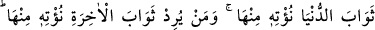

ÖLÜM ALLAH’IN DİLEMESİYLEDİR
145. Hiçbir kimse yok ki, ölümü Allah’ın iznine bağlı olmasın. (Ölüm), belli bir
süreye göre yazılmıştır. Her kim, dünya nîmetini isterse, kendisine ondan veririz;
kim de âhiret sevabını isterse, ona da bundan veririz. Biz şükredenleri
mükâfatlandıracağız.
146. Nice peygamberler vardır ki, beraberinde birçok Allah erleri bulunduğu
halde savaştılar da bunlar, Allah yolunda başlarına gelenlerden dolayı gevşeklik ve
zaaf göstermediler, boyun eğmediler. Allah, sabredenleri sever.
147. Onların sözleri, sadece şöyle demekten ibâretti: Ey Rabbimiz!
Günahlarımızı ve işimizdeki taşkınlığımızı bağışla; ayaklarımızı (yolunda) sâbit kıl;
kâfirler topluluğuna karşı bizi muzaffer kıl!
148. Allah da onlara dünya nîmetini ve (daha da önemlisi,) âhiret sevabının
güzelliğini verdi. Allah, iyi davrananları sever.
“Allah’ın izni olmadan hiçbir kişi ölemez.” Ölüm, Allah’ın dilemesi ya da ölüm
meleğine ruhu kabzetmesi için vereceği emri ve izni dışında hiçbir sebeple, hiçbir
varlık için meydana gelmez. Yani, her varlık için Allah’ın ilim ve kazâsında belirlenmiş
bir “ecel” vardır. Müslümanlar da savaştan kaçarak veya savaşa girişerek ecellerinden
bir an önce ya da sonra ölmezler.
Bu ifadeyle mü’minler, savaşa teşvik edilmekte, cesâretlendirilmekte; Hz.
Peygamber’e, eceline daha uzun bir vakit olduğu ve bu vakte kadar korunacağı vâd
buyurulmaktadır. Bu ifadede, ayrıca münâfıkların: “Bizim yanımızda olsalardı, ne
ölürler, ne de öldürülürlerdi.” (Âl-i İmrân, 3/156) sözleri reddedilmektedir. Savaşan
kişi, eceli gelmeden ölmeyeceği gibi, savaştan kaçanlar da, ecelleri geldiği taktirde
ölümden kurtulamazlar.